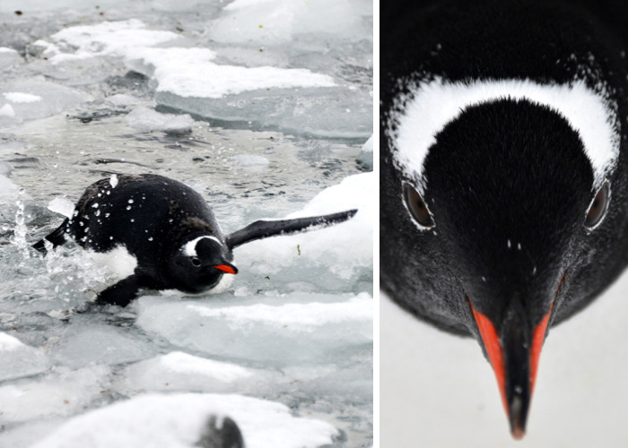
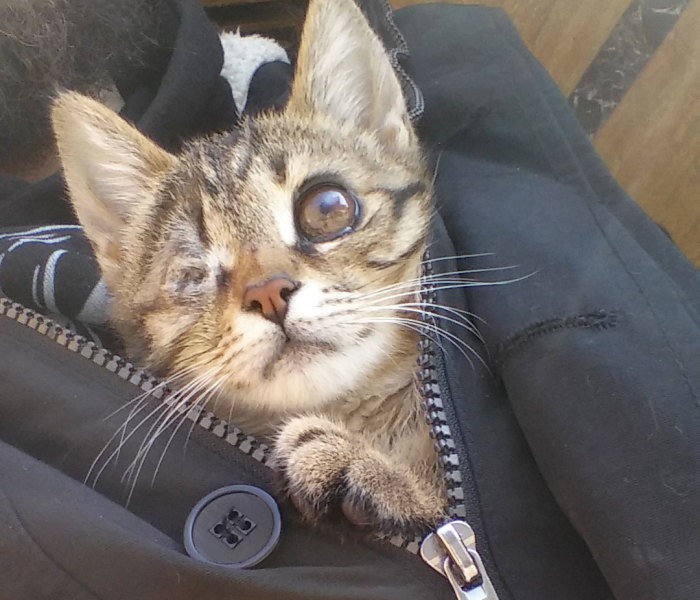

A charity project concerning homeless cats has been successfully launched a couple of years ago in Riga. Its aim is to ensure stray cats have a place to call home and feel protected. It is especially important during the cold season,... Cat Care Community
I stayed at Antarctica and was studying penguins. Wild penguins were desperate to live. Jump into the sea for food.
